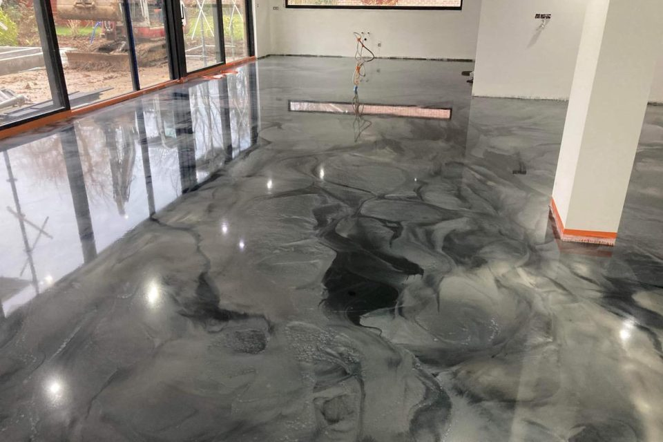
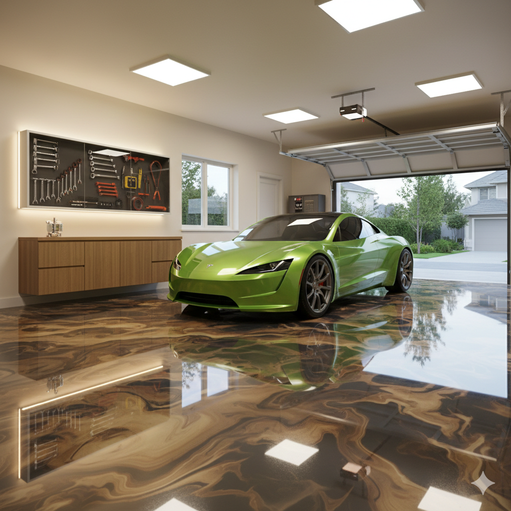
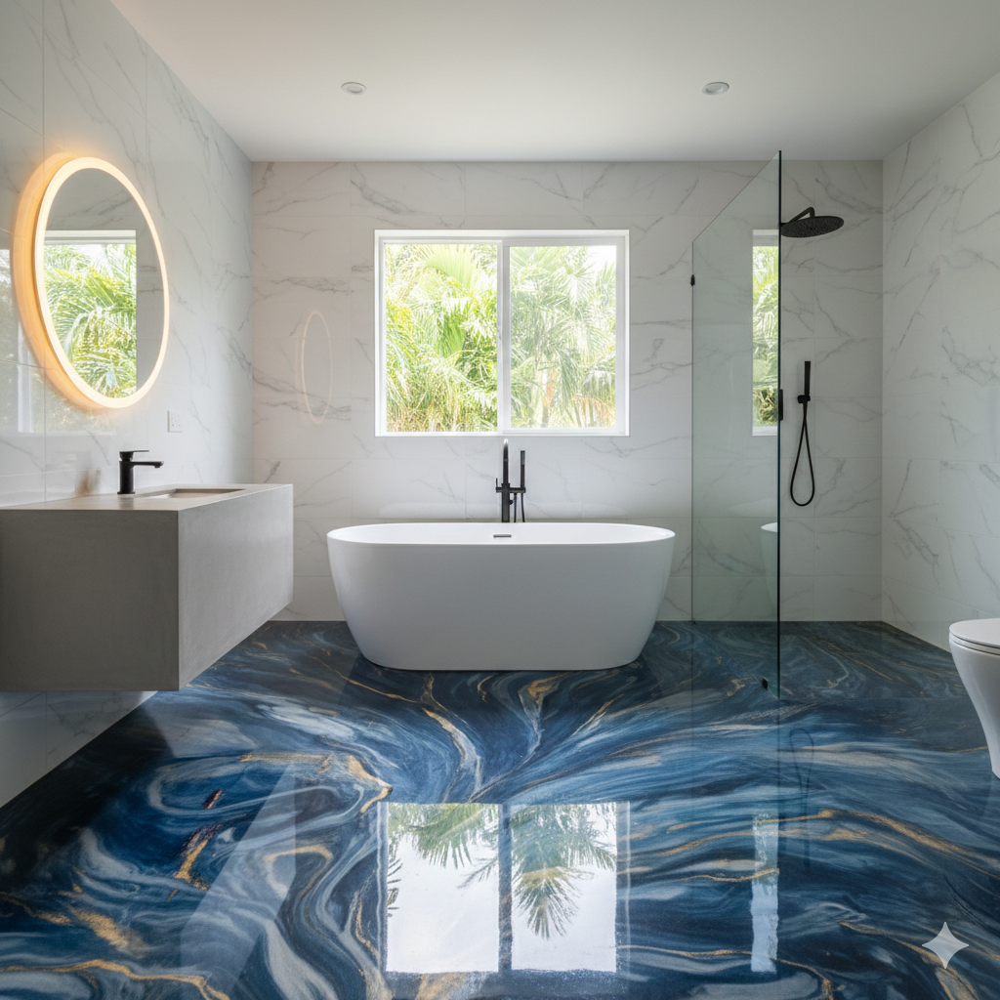

Le catalogue
Quatre matières
Un sol coulé n'est pas un revêtement, c'est un empilement de couches dont chacune a une raison d'être. Voici ce que nous posons, dans quel ordre, et pour quel usage. Les prix comprennent la fourniture, la préparation courante et la pose.
i.
Signature
Deux millimètres d'époxy autolissant sans solvant, teinté dans la masse. La matière que nous recommandons quand la priorité est la surface à couvrir et la tenue dans le temps, plutôt que l'effet décoratif.
- Épaisseur
- 2 mm autolissantPrimaire, masse teintée, vernis de protection
- Dureté
- Shore D 78Charges roulantes, chariots, transpalettes
- Rendu
- Uni mat ou satinéQuarante teintes, échantillon coulé offert
- Prix
- 120 € / m²Pose comprise, à partir de 20 m²


ii.
Métal liquide
Des pigments métallisés sont dispersés dans une base époxy, puis travaillés au chalumeau pendant la prise. La chaleur déplace les particules et fige un veinage qu'aucun échantillon ne reproduira exactement. C'est le principe — et c'est ce que vous validez avant de signer.
- Épaisseur
- 3 mm et vernisProfondeur optique perçue de 3 à 5 mm
- Dureté
- Shore D 80Pneus chauds, chutes d'outils
- Teintes
- Six bases d'atelierCuivre, argent, bleu nuit, émeraude, ambre, blanc minéral
- Prix
- 180 € / m²Pose comprise, à partir de 15 m²
iii.
Prisme
Un multicouche de quatre à six millimètres qui autorise les inclusions, les effets de profondeur et les brillances extrêmes. Réservé aux pièces où le sol est l'argument : suite parentale, hall, showroom.
- Épaisseur
- 4 à 6 mmJusqu'à quatre passes successives
- Dureté
- Shore D 82Résistance chimique renforcée
- Rendu
- Miroir, 3D ou R11Inclusions, nacres, quartz calibré
- Prix
- 220 € / m²Pose comprise, à partir de 10 m²

Le nuancier
Six bases d'atelier
Chacune se décline en intensité selon la charge de pigment. L'échantillon coulé reste la seule référence qui engage la maison.
iv.
Sols techniques
Quand la contrainte n'est plus esthétique. Chiffrage sur étude : chacun de ces paramètres change la formulation.
- Antidérapant
- R10 à R13Quartz calibré dans le vernis. Le coefficient est choisi selon la présence d'eau, d'huile ou de farine — pas selon le catalogue.
- Dissipatif
- ESD 10⁶ – 10⁹ ΩMaillage cuivre relié à la terre. Électronique, pharmacie, salles serveurs.
- Chimie
- Novolaque, PU-cimentAcides concentrés, chocs thermiques jusqu'à 120 °C. Fiche de compatibilité fournie avec le devis.
- Chantier de nuit
- 20 h – 6 hSite en exploitation : coulée par zones, remise en circulation piétonne au petit matin.
La méthode
Cinq étapes, aucune improvisation
i.
Diagnostic du support
Mesure d'hygrométrie, test d'arrachement, relevé de planéité au laser. Si la dalle ne peut pas recevoir la résine, nous le disons avant le devis — pas après la coulée.
ii.
Échantillon signé
Nous coulons une plaque de 50 × 50 cm avec vos pigments, votre finition, votre lumière. Rien ne démarre tant que vous n'avez pas signé cette plaque.
iii.
Préparation mécanique
Grenaillage ou ponçage diamant jusqu'au support sain, aspiration à la source, ragréage des points bas, primaire époxy sans solvant.
iv.
La coulée
Trois applicateurs, une passe continue, débullage au rouleau à pointes. La pièce est maintenue entre 18 et 22 °C pendant toute la prise.
v.
Vernis et réception
Vernis de protection, contrôle de brillance au glossmètre, remise du carnet d'entretien et de l'attestation de garantie décennale.
Questions fréquentes
Avant de couler
Oui, à condition que le carrelage soit solidaire du support et non creux. Nous ponçons pour casser l'émail, nous traitons les joints, puis nous appliquons un primaire d'accrochage spécifique. Un test d'arrachement valide la tenue avant toute coulée — s'il échoue, nous proposons une dépose.
Circulation piétonne légère à 24 heures, mobilier à 72 heures, charges roulantes et nettoyage humide à 7 jours. La polymérisation complète prend 21 jours : pendant cette période, évitez les produits agressifs et les tapis en caoutchouc.
Une résine époxy nue jaunit sous ultraviolets. C'est pour cette raison que toutes nos matières exposées à la lumière naturelle reçoivent un vernis polyuréthane aliphatique anti-UV. Sur nos chantiers de plus de dix ans, la dérive colorimétrique mesurée reste sous le seuil perceptible.
Le décollement, le faïençage et la fissuration d'origine non structurelle sont couverts dix ans. L'usure d'aspect, les rayures et les dégradations liées à un entretien non conforme au carnet remis à la réception ne le sont pas. L'attestation nominative vous est remise le jour de la réception.
Oui, pour les chantiers de plus de 150 m², partout en France métropolitaine. Les frais de déplacement et d'hébergement de l'équipe sont alors chiffrés séparément et apparaissent en ligne distincte sur le devis.
La suite
Chiffrez les quatre matières sur votre surface
L'estimation applique les tarifs de nos devis. Vous voyez exactement ce que change un passage de Signature à Prisme.